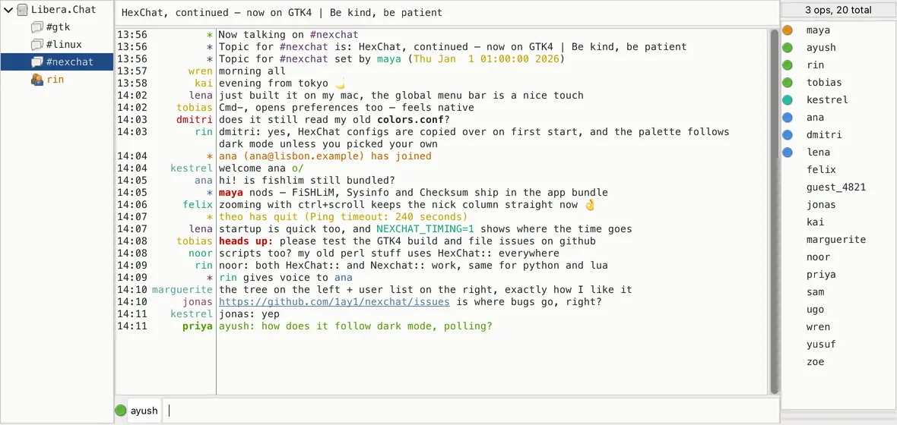
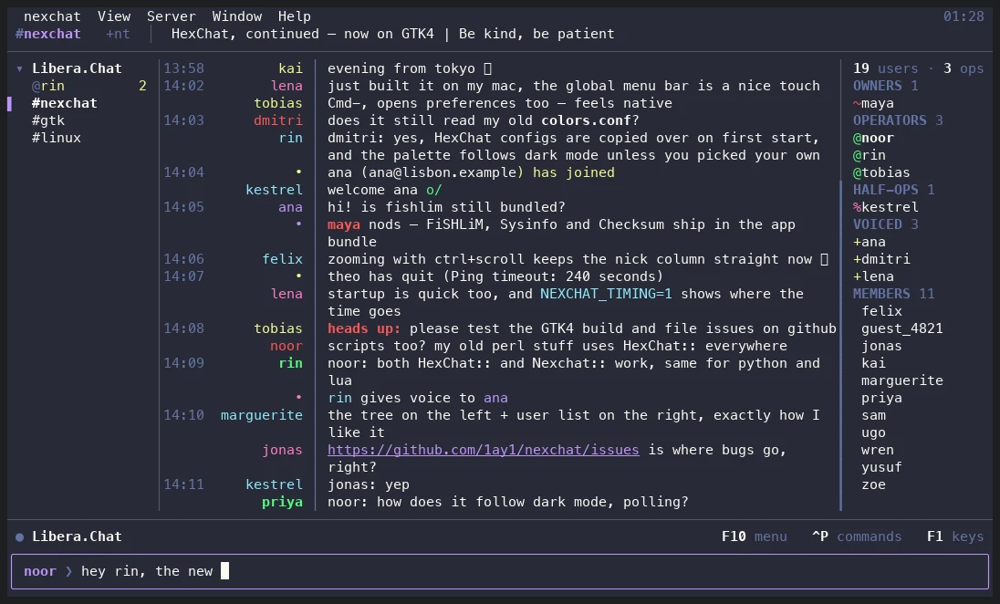
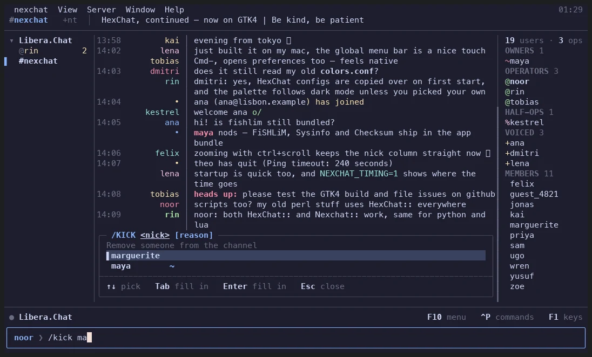

An IRC client for the desktop and the terminal.
HexChat, continued: the same window, menus and keys, on GTK4, with IRCv3 and bouncers. Your HexChat setup carries over.
- download
- latest release · Windows, macOS, Linux
- flatpak
flatpak install --user nexchat-*.flatpak- terminal
nexchat --tui· the same client, over SSH or in tmux

what's in it
- layout
- HexChat's window, unchanged: a channel tree or tabs, the user list with mode icons.
- gtk4
- HiDPI and Wayland done properly, on Linux, the BSDs, Windows and macOS.
- ircv3
- SASL, STS, chat history, multiline, replies, typing, read markers, redaction.
- bouncers
- set up soju in one click, or use yours: soju networks and search, ZNC playback.
- colours
- follow the system's light and dark; 800+ schemes; colours you set stay put.
- scripts
- Python, Perl, Lua and C plugins. The HexChat API, unchanged.
- macos
- the system menu bar, ⌘ shortcuts, a menu bar icon, one
nexchat.app. - tray
- StatusNotifierItem on Linux and BSD, the notification area on Windows.
- the rest
- DCC, FiSH, logs, notify lists, auto-replace, the URL grabber, and a network list with Libera.Chat, OFTC and dozens more.
in a terminal
nexchat --tui is the same client, not a cut-down one: the same networks, settings, logs and scripts as the window, with every window there and both the keyboard and the mouse.

- mouse
- click tabs and nicks, drag to select and copy, drag the dividers.
- commands
- type
/for every command, what it takes, and values as you go. - themes
- 600+, previewed as you move through the list, or your terminal's own colours.
- any size
- from a phone-sized corner to a wide monitor; narrow screens stack each message under its nick.
- live
- preferences,
/setand the theme apply at once;keybindings.confworks here too.

/kick ma: the usage, the argument you're on, and who it could be.keys worth knowing
- CtrlP
- every command, action and tab, in one fuzzy list
- CtrlG
- go to a channel or conversation
- CtrlF
- find in the chat; ↑ ↓ step through matches
- Alt1…9
- switch tabs; Alt A the next with activity
- F10
- the menus; F1 every key
How it's designed and tested: docs/tui-design.md
coming from hexchat
- On first start nexchat copies
~/.config/hexchat(or%APPDATA%\HexChat). Your HexChat folder is left alone. - C plugins keep working:
hexchat-plugin.his unchanged,nexchat-plugin.his the new name. - Scripts keep working:
import hexchatorimport nexchatin Python, both names in Lua,HexChat::andNexchat::in Perl. - Themes (
.hct) andcolors.confwork the same. - The HexChat documentation still applies.
What's different, what's new, and running both: Coming from HexChat
install
Everything is on GitHub Releases.
- windows
setup.exe, orportable.zipto run from any folder (settings stay beside it).- macos
- the
.dmg(Apple Silicon). Drag nexchat to Applications; the first time, right-click it and choose Open. - linux
flatpak install --user nexchat-*.flatpak- arch
packaging/arch/nexchat-gitin the source tree.- terminal
nexchat --tui; on a Mac,nexchat.app/Contents/MacOS/nexchat --tui.
build from source
meson 0.59, GTK 4.14, GLib 2.76 and OpenSSL. The terminal client also wants a C++23 compiler and cmake; it's built when they're there.
Linux and BSD
git clone --recursive https://github.com/1ay1/nexchat
cd nexchat
meson setup build
ninja -C build
./build/src/fe-gtk/nexchat # the window
./build/src/fe-gtk/nexchat --tui # the terminal clientmacOS, with Homebrew
brew install meson gtk4 openssl@3 cmake
git clone --recursive https://github.com/1ay1/nexchat
cd nexchat
meson setup build -Ddbus=disabled
ninja -C build app
open build/nexchat.appWindows, in an MSYS2 UCRT64 shell
pacman -S mingw-w64-ucrt-x86_64-{gcc,pkg-config,meson,gtk4,gettext,openssl}
git clone https://github.com/1ay1/nexchat
cd nexchat
meson setup build -Ddbus=disabled -Dwith-perl=false
ninja -C buildquestions
- Is HexChat discontinued?
- Yes. HexChat's repository was archived in 2024, and it never left GTK2. nexchat continues it on GTK4, keeping the layout, menus and keybindings.
- What is a good HexChat alternative?
- nexchat is a drop-in HexChat replacement: the same window, menus and keybindings, your settings, plugins and scripts imported on first start, on GTK4 and kept up to date.
- Can I keep my HexChat settings, plugins and scripts?
- Yes. On first start nexchat copies your HexChat configuration folder and leaves the original alone. C plugins build against the unchanged plugin API, and Python, Perl and Lua scripts keep working under their HexChat names.
- Can I use nexchat over SSH or without a desktop?
- Yes.
nexchat --tuiruns the same client in a terminal, with the same networks, settings, logs and scripts as the desktop window. - Does nexchat support IRCv3?
- Yes. SASL, STS, server-time, chat history, multiline messages, replies, typing notices, read markers and message redaction, among others, wherever the network supports them.
- Does nexchat work with a bouncer like soju or ZNC?
- Yes. It lists a soju bouncer's networks and searches its history, plays back ZNC's buffer, and can set up a soju bouncer for you so you stay online.
- Which platforms does nexchat run on?
- Linux, the BSDs, Windows and macOS. The terminal client runs on Linux, the BSDs and macOS.
- Is nexchat free?
- Yes. It is free and open source software under the GPL v2, like HexChat and X-Chat before it.